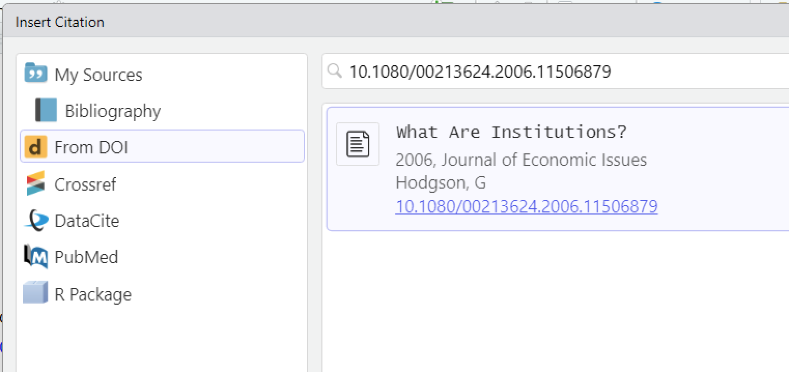

Intro to R Markdown
2025-02-03
Overview:
tl;dr:
How to put the text and R output of your work in R Studio into a single, unified document, and save it as an MS-Word file to turn into Canvas.
This presentation may be found at https://kwmullet.github.io.
It was written in R Markdown using Quarto in R Studio, and the source is at https://github.com/kwmullet/kwmullet.github.io.
Please feel free to send me any questions, corrections, or comments we don’t get to in class at email kwm@unm.edu.
Overview:
- What is R Markdown and why use it?
- What needs to be in place to use R Studio to generate MS-Word documents?
- The structure of an R Markdown document
- Visual and source editor modes
- Markdown
- “code chunks” and inline code
Overview:
- Formula notation
- Tables of contents
- Citations
- Cross-references
- Using a wordcount plugin to R Studio for word counts
- Fine-tuning your MS-Word document
What is R Markdown and why use it?
- “Literate Programming”
- In 1962, grad student Donald Knuth was approached by a publisher to write a book on compiler (computer language) design. In response (watch for more scope creep), he proposed a 12-chapter book on computer programming. The project eventually balooned to a seven volume set called “The Art of Computer Programming”, only four of which have been published to date (he’s currently 86). Knuth, who later became a CS professor at Stanford, found the typesetting tools completely (to him) inadequate to convey the math formulas in the books, so he suspended work to invent \(\TeX\) (not unlike Newton inventing calculus to describe physics). Once he did that, he invented something called “literate programming” where code, output, and the text of an article or book could co-exist on the same document.
What is R Markdown and why use it?
- R
- In 1993, Ross Ihaka and Robert Gentleman wrote a statistical programming language that would be an update to the then-popular “S”. They named it R not only to promote it as a successor to S, but because it was the first letter of each of their names.
What is R Markdown and why use it?
- Markup Languages
- Since the early 1960s, so-called “markup” languages have been developed and used to add structure and control appearance of plain text documents. Among them are HyperText Markup Language (HTML), \(\TeX\)/\(\LaTeX\), and Yet Another Markup Language (YAML).
- R-Markdown is both a pun (marking down instead of up) and a promotion of it being a next-generation mark(up|down) language.
What needs to be in place to use R Studio to generate MS-Word documents?
On a fresh or fully-functional installation of R and R Studio which has never created an R Markdown document, the user will be prompted to approve installation of several packages the first time they create an R Markdown document.
The structure of an R Markdown document
- At the very top of your
R markdowndocument:- YAML header (
YetAnotherMarkdownLanguage)- You may add more to it over time
- Start and end with a line of three dashes
- Blank line after the closing three dashes
- YAML header (
The structure of an R Markdown document
Setup block and code chunk flags
The setup block is typically the first r code chunk in an r markdown document.
What is a code chunk?
A code chunk is a block of executable code that begins and ends with a line of three backticks (```). The first line of backticks ends with braces which indicate the language for the chunk (typically r ), a name for the code chunk, and however many options you care to set. Between the first and last lines is executable R code.
After the YAML and the setup block, you can put an arbitrary amount of markup and R code chunks.
Visual and source editor modes

Toggle between source and visual editor with the button at the upper left of the editing pane.
Markdown
Header levels
Markdown
lists, bold, italics, links, and images
- unordered list
- of items
- in no
- order
- whatsoever
1. ordered list
1. with some **bold** and
1. some *itallic*
an image 
and a link to [the MPP page](http://mpp.unm.edu/).- unordered list
- of items
- in no
- order
- whatsoever
- order
- ordered list
- with some bold and
- some itallic
an image and a link to the MPP page.
“code chunks” and inline code.
Source view of R code chunk and inline code.
“code chunks” and inline code.
Knitted (rendered) view of R code chunk and inline code.
“knitting” your document to HTML or MS-Word.
This button will will turn your R Markdown into whatever output you’ve chosen. Usually, this will be word_document or html_document.
Remember the YAML header:
---
title: "My Sample Markdown Document"
author: "Eeyore Namehere"
date: "`r Sys.Date()`"
output: word_document
---Formula notation
Formulas are given as \(\LaTeX\) between two dollar signs thus:
$\hat{y}=\beta_0+\beta_1x+\epsilon$yields
\(\hat{y}=\beta_0+\beta_1x+\epsilon\)
By the way,
$\LaTeX$yields
\(\LaTeX\)
Tables of contents
If you modify your YAML header like this…
---
title: "My Sample Markdown Document"
author: "Eeyore Namehere"
date: "`r Sys.Date()`"
output:
html_document:
toc: true
toc_depth: 2
---Tables of contents
…you will get a Table of Contents something like this at the top of your document. If your output target is word_document, it will be slightly more elaborate.
The TOC is constructed from all the lines using header style (#, ##, ###, etc.)
Citations
To use citations and automatically generate a Works Cited at the end of the document, you can change your YAML like this. This isn’t the only approach, but this is what I’ve used.
---
title: "My Sample Markdown Document"
author: "Eeyore Namehere"
date: "`r Sys.Date()`"
output:
html_document:
toc: true
toc_depth: 2
header-includes:
- \usepackage{apacite}
- \bibliographystyle{apacite}
bibliography: references.bib
---Note that I’ve added a new section header-includes: and in it, I’ve told knit to load the \(\LaTeX\) package apacite for APA citations, and told it to use APA bibliographic style. I’ve also added a section bibliography: to tell it what file has my references, in Bibtex format.
Citations
Citations can be added by nesting it in a construction like [@blah] .
Here is some text in which I will cite references, such as [@olson2020] or perhaps @bowser2006 or a particular page of [@aragon2020, Page 34-55] or cite a DOI [@hodgson2006]
Citations that aren’t in a bibliography file can be added with the DOI, but that requires using the editor in visual mode, and choosing Insert/Citation/From DOI.
Citations
Once you knit your document, you should see your citations and reference list show up something like this. You will probably want to put a # Works cited or equivalent at the bottom of your document so it will be immediately before the reference list.
Cross-references
- In your paper, if you want to have references in your text to specific tables or figures in your documents rather than just “in the figure above”, you’ll need to know how to do cross-references.
- Plain vanilla R Markdown can’t do internal cross-references. To do that, we’ll have to install the
bookdownpackage. - After Bookdown is installed, you’ll have to modify your
YAMLheader to use it. - Cross-referencing will be explained.
Cross-references
Installing the Bookdown package
From your R Studio console, issue the command
install.packages("bookdown")
R Studio will complain if you don’t have the packages installed to compile new packages from source, but if you’re on a Mac or Windows machine, it shouldn’t be necessary to have them.
Cross-references
Changing your YAML header for Bookdown
Etiam congue quam eget velit convallis, eu sagittis orci vestibulum. Vestibulum at massa turpis. Curabitur ornare ex sed purus vulputate, vitae porta augue rhoncus. Phasellus auctor suscipit purus, vel ultricies nunc. Nunc eleifend nulla ac purus volutpat, id fringilla felis aliquet. Duis vitae porttitor nibh, in rhoncus risus. Vestibulum a est vitae est tristique vehicula. Proin mollis justo id est tempus hendrerit. Praesent suscipit placerat congue. Aliquam eu elit gravida, consequat augue non, ultricies sapien. Nunc ultricies viverra ante, sit amet vehicula ante volutpat id. Etiam tempus purus vitae tellus mollis viverra. Donec at ornare mauris. Aliquam sodales hendrerit ornare. Suspendisse accumsan lacinia sapien, sit amet imperdiet dui molestie ut.
Cross-referencing
Duis urna urna, pellentesque eu urna ut, malesuada bibendum dolor. Suspendisse potenti. Vivamus ornare, arcu quis molestie ultrices, magna est accumsan augue, auctor vulputate erat quam quis neque. Nullam scelerisque odio vel ultricies facilisis. Ut porta arcu non magna sagittis lacinia. Cras ornare vulputate lectus a tristique. Pellentesque ac arcu congue, rhoncus mi id, dignissim ligula.
Using a wordcount plugin to R Studio for word counts
demo using this plugin.
Fine-tuning your MS-Word document
demo
Intro to R Markdown (kwm@unm.edu)